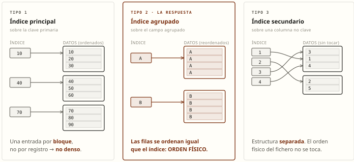

Lección 28 · Unidad 4 · Organización física
Los tres tipos de índice, y cuál ordena físicamente
La lección con más probabilidad de aparecer en el parcial. Y con una trampa en el material que conviene ver antes de estudiarla.
- El docente dio la pregunta textual en clase: "¿cuál de todos los índices ordena físicamente los campos?" — más el "justifique".
- Las pautas de examen piden "nombre de los tipos y para qué sirve cada uno, qué beneficio tiene cada uno".
-
El modelo
bd parcial 1apregunta: "Explique cada tipo de Índices: Agrupados, Principal y Secundarios. De un ejemplo."
Y el tercer error que el docente dice que marca siempre es no acordarse para qué sirve cada tipo. Esta lección está armada para atacar exactamente eso.
01Qué es un índice
Venías de la lección 27 con una pregunta abierta: si el fichero tiene un millón de registros, ¿hay que leerlos todos? Ésta es la respuesta, con la definición textual del material:
"Un índice es una estructura de datos que mapea los valores de una o más columnas de una tabla a las filas correspondientes en dicha tabla. Esto permite un acceso más rápido y eficiente a los datos en lugar de realizar una búsqueda secuencial."
Guardá esa última cláusula. Un índice no hace nada más que evitar la búsqueda secuencial. Si en el parcial te piden "para qué sirve", ahí está la respuesta en siete palabras.
02Los tres tipos
El material los presenta por qué columna indexan:
"Índice principal: se crea en la columna o columnas que forman la clave primaria de una tabla.
Índices secundarios: son aquellos que se crean en columnas que no forman parte de la clave primaria de una tabla."
Y el agrupado aparece aparte, definido por lo que le hace al fichero en lugar de por qué columna toma:
"En un índice agrupado, las filas de la tabla se ordenan en el mismo orden que el índice, lo que significa que las filas que tienen valores similares en la columna indexada están físicamente almacenadas juntas en el disco."

Antes de leer la tabla: nombrá los tres tipos y un beneficio de cada uno
Hacelo de memoria, en voz alta o en papel. Si podés, escribí también el costo de cada uno — es la mitad que todos olvidan, y las pautas piden "qué beneficio tiene cada uno".
Recién después mirá la tabla. Leerla sin haber intentado recuperarla primero es lo que produce la sensación de saberlo sin saberlo.
| Tipo | Sobre qué se crea | Beneficios y costos |
|---|---|---|
| Principal o primario |
La columna o columnas de la clave primaria. Sólo uno por tabla, "ya que la clave primaria es única en la tabla". |
Unicidad — no puede haber dos filas con el mismo valor de clave Búsqueda eficiente por clave primaria Base de las restricciones de integridad referencial |
| Agrupado | El campo agrupado. Reordena el fichero: los valores iguales quedan juntos en disco. |
Ordenamiento físico (+) Búsqueda eficiente (+) Ahorro de espacio (+) Limitaciones en la modificación de datos (−) |
| Secundario | Columnas que no forman parte de la clave primaria. Crea una "estructura de índice separada". |
No afecta el ordenamiento físico (+) Búsqueda eficiente (+) Mayor espacio de almacenamiento (−) Mayor flexibilidad (+) Uso excesivo degrada el rendimiento (−) |
El material cierra el secundario con una advertencia de diseño que vale como frase de cierre en una respuesta de desarrollo: "es importante cuidadosamente planificar y evaluar la necesidad de índices secundarios en función de los requerimientos de consulta y rendimiento".
03Denso y no denso
Una clasificación aparte, que cruza a las anteriores. Textual:
"Índice denso: tiene una entrada de índice por cada valor de la clave de búsqueda (y, por tanto, cada registro) del fichero de datos.
Índice no denso: sólo tiene entradas para algunos de los valores de búsqueda."
"Por consiguiente, un índice principal es un índice escaso o No Denso, porque incluye una entrada por cada bloque de disco del fichero de datos en lugar de una entrada por cada valor de búsqueda (es decir, por cada registro)."
Si el índice apunta a bloques, es no denso. Si apunta a registros uno por uno, es denso. No hay que memorizar la tabla: se deduce de a qué le apunta cada uno.
04La trampa
Las páginas del principal lo definen como "el índice de la clave primaria" y le adjudican la unicidad. El ordenamiento físico se lo dan al agrupado.
Pero la página de denso / no denso está copiada textual de Elmasri (p. 431), donde el índice principal sí implica que el fichero está ordenado por esa clave — de ahí que tenga "una entrada por bloque". Si el fichero no estuviera ordenado, esa frase no tendría sentido.
Son dos marcos distintos pegados en el mismo material. Si razonás desde el párrafo de densidad, contestás "principal" y te lo marcan mal.
A "¿cuál de todos los índices ordena físicamente los campos?" la respuesta es el agrupado. Y la justificación, con las palabras del material: porque "las filas de la tabla se ordenan en el mismo orden que el índice", de modo que "están físicamente almacenadas juntas en el disco".
No razones desde el párrafo de densidad, y no le corrijas el material al docente
en la hoja. Está en MISSION.md como regla general: cuando Elmasri y
la cátedra difieren, gana la cátedra.
05Un ejemplo de cada uno
El modelo de parcial pide "de un ejemplo", así que conviene llevarlos preparados. Tomemos la tabla de la Unidad 3:
| Tipo | Ejemplo sobre esa tabla | Qué consulta acelera |
|---|---|---|
| Principal | Sobre NFact, la clave primaria. |
"Traeme la factura 4318." Y garantiza que no existan dos facturas 4318. |
| Agrupado | Sobre CodCli: las facturas del mismo cliente quedan juntas
en disco. |
"Traeme todas las facturas del cliente 3." Se leen de bloques contiguos. |
| Secundario | Sobre Fecha, que no es clave primaria. Estructura aparte. |
"Traeme las facturas de enero." Sin tocar el orden físico del fichero. |
Fijate por qué el agrupado sirve justo para el segundo caso: el cliente 3 tiene muchas facturas. Agrupar por un campo con valores repetidos es lo que hace que "las filas con valores similares estén almacenadas juntas y puedan ser leídas más eficientemente". Sobre la clave primaria no habría nada que agrupar: cada valor aparece una sola vez.
06Práctica
¿Cuál de todos los índices ordena físicamente los campos?
¿Qué índice tiene como costo el mayor espacio de almacenamiento?
¿Por qué en una tabla puede haber un solo índice principal?
¿Por qué el índice principal es un índice no denso?
Unidad 4 — Conceptos, páginas 4 a 8
(raw/Material_Examen/unidad 4 conceptos.pdf), equivalente a los slides
9 a 17 del deck Clase Indices y Txn. Todas las citas son textuales.
Elmasri & Navathe, 5ª ed. — capítulo 14, "Estructuras de indexación para
los ficheros", §14.1, páginas 430 a 437 (en el PDF de raw/:
páginas 455 a 463). Leelo con una advertencia: el libro usa otra taxonomía —
llama "principal" al índice sobre el campo de ordenación y reserva "agrupado" para
un campo de ordenación que no es clave. Sirve para entender el mecanismo;
para contestar, la cátedra.
Soy tu profe acá. Pedime que te tome los tres tipos a ciegas: yo te doy un caso — "una tabla de empleados que se consulta siempre por departamento" — y vos me decís qué índice va y por qué. Eso es lo que evalúa el parcial.